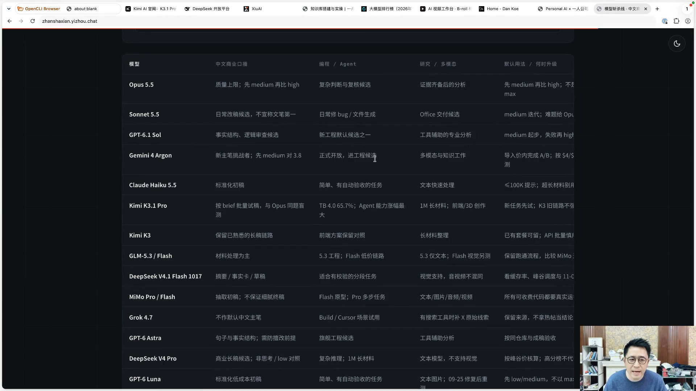
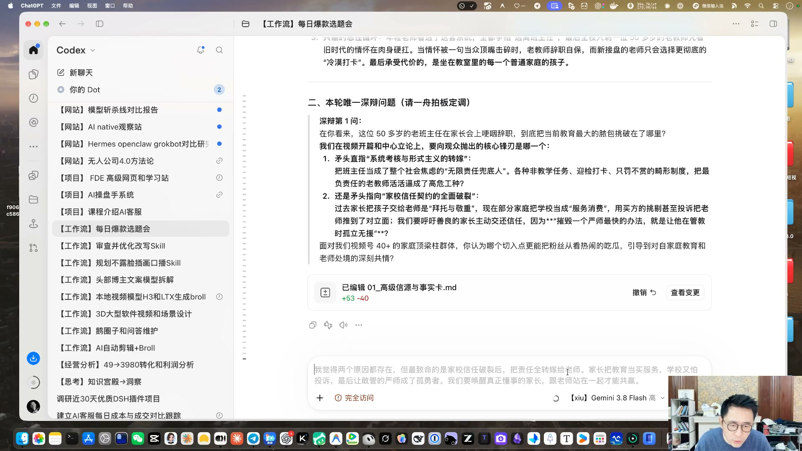

一舟一课 3.0 · 第四十九课
这节课他不再讲道理，直接把自己的电脑桌面、内部评测网站和正在跑的自动化项目全摊开给人看。整场九十六分钟，讲的是一件很具体的事：怎么每天稳定产出有人看的爆款内容，而且成本低到可以一天做一百条。
全课拆开是四件事。先配齐信源和模型，认清哪台机器干什么活；再拆解头部科普号《大圆镜科普》，让本机的免费模型每晚趁人睡觉自动干七个钟头；然后借全球“一人公司”最有名那位的判断，说清为什么别去卷做软件；最后是一段真刀真枪的现场演示，怎么开一场选题会，让 AI 记者团互相辩出一篇稿子的立论。
他从找料讲起，第一句就是做减法。几十个 AI 博主每天刷不完，中文圈盯住一个站就够，叫 AIHot，是做数字生命的卡兹克整理的。模型更新、产品动态、论文教程、每天一份日报和滚动热点都在里面，三分钟扫完就知道今天发生了什么。他自己的说法很直白，每天光看信息不如动手做事，年课学员看这一个源就够，不用再额外买课。
要抓近 12 小时的新鲜信号，他课件里固定四个工具配合。用 AI HOT 看中文 AI 精选，用 TrendRadar 扫中文全网热榜，用 OpenCLI 在平台内做只读搜索；碰上核心线索先用 Exa 找一手原文，页面难读再让 Firecrawl 扒下来。搜完只准留 3 个候选，每条必须写清一句事实、真实的发布时间和抓取时间、原始作者加可打开的原链，还有这条跟受众的钱、机会或风险有什么关系。他留了一句防踩坑的话：搜到的时间不等于事情发生的时间，点赞多也不等于消息可靠。
信源齐了，接着是哪台机器干什么活。他专门拆开一个概念：一篇文章好不好，取决于两样东西。大模型是脑子，套在模型外面那层工作流框架叫 Harness，直译过来是马具。同一匹马配不同的鞍，跑出来的东西差很远。所以真正的本事不在挑模型，在调这层鞍。
写商业口播，他把主笔的位置先给了谷歌。Gemini 4 Argon 是他心里眼下人味最浓的一台，排第二的是一直在用的 Gemini 3.8 Flash。Gemini 4 Carbon 虽然在公开评测里分数更高，但还处在受限开放阶段，日常顶上去干活的是 Argon，他在自己的内部站上专门标了一句，这两个不能混着说。他还顺带算了一笔账，谷歌这家很大方，找正规渠道买教育版年包，一个月合下来才几块到几十块，而且背靠一个巨大的搜索库，画图、编程、写前端、答问样样都能来。
Claude 家族留着兜底。Opus 5.5 在一套中文叙事公开评测里拿了 82.84 分排第一，适合证据都齐了之后做深度判断和最后一遍把关，先开中档，再跟高档对一遍就行，不必一上来就拉满。Sonnet 5.5 管日常改稿和办公文档，Haiku 5.5 只接十万字以内、能自动验收的小活。
干活最多的是 Kimi K3.1 Pro，他自己开着 699 元一个月的套餐，上课当天额度刚重置。他给它的定位是聪明的大学生：做网页前端和 PPT 很好看，能同时开一个主代理带一堆子代理，并发干二十件七八十分的任务；支持一百万字的上下文，接口价格还比上一代低三分之一。真要多层翻自己的文档、做再深一层的判断，它就顶不住，这时候他会换人。
DeepSeek 胜在省事。不用折腾网络设置，官网点开就能建接口，微信或支付宝充二十块、五十块都能开工，还支持对公开票。他现场点开后台给人看，单月刚烧掉五亿六千多万字。V4.1 Flash 适合资料清洗、摘摘要、做事实卡；V4 Pro 支持百万字长文和复杂推理，但让它直接写文章容易散，他拿它打初筛。
编程和逻辑审查交给 GPT-6 系列的 Astra 和 Sol，极简单的活给便宜九成的 Luna；长工程的文本链路留着 GLM-5.3，他在内部站上还特意标注了一句，旗舰 5.3 是纯文本模型，别因为 Flash 版能看图就以为旗舰也能。旁边还挂着四套他一直开着的助手：Grok Bot 查资料、做表格、备草稿；JEV 放在本地做选题路由和风险打分；Hermes Agent 攒了两百多个历史会话，专门干慢查和深度调研；OpenClaw 挂着十个 Telegram 机器人，全天在线收发结果。
不用这些复杂工具的人，在国产工作台 WorkBuddy 里写长文，参数记三样就行。模型选 Kimi K3.1 Pro 或 DeepSeek V4.1 Flash，上下文拉到一百万字，思考强度开“高”。他特意提醒别开极致或者 Max，想太多反而钻牛角尖，算力也烧不起。

工具配齐，他放了一段 B 站头部科普号《大圆镜科普》的片子，讲肺炎双球菌转化实验和 DNA 双螺旋，七分钟。这种水准的手绘动画混剪科普，一支团队做一条，市场成本在三千到一万块之间。
他没打算去学画画。他建了一条夜里自己跑的流水线：把《大圆镜科普》的原片连同一篇拆解他们手法的文章丢给 AI，在本机装好开源的本地视频模型 ltx-2-mlx，让 Gemini 3.8 Flash 当总控，设好定时任务，每天晚上九点半到次日凌晨四点半，整整七个钟头，趁他睡觉的时候自己写分镜提示词、自己生成视频、自己看片挑毛病（人物脸崩了、前后对不上），再自己改提示词跑下一轮。跑的是本机显卡，一个字都不用付费，只花一点电。
到上课前一晚，也就是第八天收尾，账是这样的。那一晚生成 320 条视频，其中 16 条是 1080P 高清成片，12 条是基准测试片；七晚累计 1039 条，本机高清原片 1.85G，整个项目文件夹已经长到 8.2G。
数字对比 · 睡一觉，电脑替你攒下多少素材
同一类片子，头部团队一条三千到一万块；这套本地流水线的开销只有几度电，代价是画面水准大概八十五分，到不了一百分。
更省事的一步在后面。他不愿意每天早上面对一堆代码和文字报告，干脆让 AI 顺手写了张网页，叫本地影像·每日审片台。每晚任务收尾时自动跑一行发布脚本，几秒钟把每条五秒的高清片压成 360p 的静音预览，一条只有 80K，1039 条传到线上总共 123M，原片一条都没上传。早上拿手机点开，按八大场景和五种运镜筛，看中了点“接受”，不行就标待改或者不采用。本机看的是原片，手机上看到的是预览，两边标过的记号还能互通。
他最看重的一条习惯在最后：哪次跑出满意的东西，当场封成模板，绝不浪费。现在他的工作台里躺着五套。一是实拍口播配手绘插画和动画图解，按语义往画面里插写意插画，数据图用网页程序化生成；二是真实素材混剪，下载官方原片再配上文字识别取证；三是不出镜的全屏写意插画配克隆声音；四是品牌框架，自动套上一舟一课的顶底标识；五是真人加插画上下融合，上半屏拍人，下半屏 AI 生成插画，用 ffmpeg 确定性地拼在一起。以后他只要对着镜头讲上半截，下面全交给机器。
为什么要费劲搭内容流水线，不干脆做个软件去卖。他借 Dan Koe 十一月三号发在 X 上的一篇文章讲了三层。此人是全球“一人公司”这个领域最有名的博主。
第一层，软件在贬值，注意力在升值。现在一句话就能让 AI 写出一个审片台那样的小工具，九成九的人扎堆去造工具卖给别人，这条路已经很挤。自己造的工具有更值钱的用法，当一把不外售的铁锹，靠它每天低成本产出一批八十五分以上的内容，把有钱客户的注意力吸过来。他说得很直接，谁手里握着分配权，谁才有议价权。
第二层，从收月费的代运营，变成分增量的合伙人。一个线下火锅店、连锁理发店或者建材商，干了十年没倒，老板一定懂行，但他不会用 AI 搞素材、算账、管人。以前你一个月收几千到一两万帮他发帖，现在换个谈法，只分增量。你带工具进场把业务拉起来，多赚的那部分你拿分成，老板零风险，愿意试。跑顺三到六个月，你摸透了这门生意，再往前谈排他。原话是同城这一块，我跟全家合作就不碰 7-11，跟你的火锅店绑死就不帮隔壁对手。反过来，你自己就是开店的，把二十年行当的经验结合 AI 做成提效工具，去找同城不同品类的店主结异业合伙，两边资源互换，也能多赚一份。
第三层，一个人就是一家代理公司。三组人的活压进一个人身上。品牌战略师定核心信念、受众痛点和调性，把老板嘴里的碎念头整理成一份认知库；内容策略师当雷达，从近十二小时的热点里挑出有争议、有获得感的题；工业化分发者由 AI 批量裂变长文和逐字稿。人只守两头，开头定方向和计划，最后做事实核查和审美定调。不雇人，深做一到三个高客单客户，毛利极高。
后半场五十到九十三分钟，他现场开了一场选题会。很多人让 AI 写东西觉得假，原因是一上来就要正文。他的做法反过来，把 AI 当成刚采完风回来的记者，自己坐总编的位置。
第一步是清晨派活，逼 AI 排优先级。他设了定时任务，让 AI 每天五六点自己跑，等十点打开电脑，选题单已经摆在桌上。派活时不能只说“找几个热点”，要规定按今日必抢、隔天还能打、备选三档分开，用五星加百分制打分，每条两三句话写清核心标题、人物事件和冲突点。非得分档的理由他讲得很实在：上周那张单子上，他真正看上的往往是自己觉得只能算备选的题，比如十一块钱拍下鹤岗六十八平的房子、一杯奶茶钱买套房；再比如谷爱凌说没有谁会因为吃苦获奖，知乎上四百九十七万人讨论。你每骂回去一次，AI 的打分标准就离你的脑子近一点。
第二步是当场痛批，然后换人。他在两个工作台里同时跑同样的任务，要求避开没人看得懂的硬核 AI 圈自嗨，专挑民风民生、婚姻家庭、家庭教育、房子这些老百姓关心的话题。一个几十秒就交卷，因为没有历史上下文，选出来的全是大路货；另一个搜了将近十分钟，交出二十条，精选出六条，包括五十多岁的班主任在家长会哽咽着递辞呈、一百二十九万一针的抗癌药进医保、南京零元面馆改成只对四类人免费。
但看了那六条，他当场打了三十分，不及格，用语音输入法骂回三条。排版反人类，核心人事被挤成窄窄一条，要求把冲突直接铺在对话正文里；立意太浅还容易引战，班主任那题不能停在学生顶嘴，要挖老师被无限加码的责任，而且不许挑唆家校对立，要让善良的家长和老师站一边。最后他认定这个模型想得不够深，中途把模型换成 Gemini 3.8 Flash 重跑。这一换，三道题立刻立住了。抗癌药从一百二十九万降到三十万以下，靠的是关键环节的国产替代，才成了普通家庭咬咬牙、配上大病医保和商业保险够得着的希望底线；星巴克不消费就劝离，和零元面馆把七家小店逼到转让，被他并到一起谈公共善意与商业生存的边界。
第三步，每次只辩一题。他给选题会 Skill 定了一条铁规矩，双方每次只辩一个问题。AI 会像辩手一样抛出尖锐的第一问，逼总编在两个锋刃里选。

更省力的是，客户端会在你开口前，先在输入框里替你拟好一条灰字回答。你觉得对胃口，按一下键盘上的方向右键就采纳了；接着用语音输入法补上几句自己的真话，比如他顺口补的那句，我自己孩子刚读小学二年级，深有体会，孩子需要严师替他把规矩立起来，两边是一伙的，不是甲乙方。来回三四轮，你随口聊出来的那些话，就成了谁也抄不走的语料，最后让 Argon 顺着这份语料一气呵成写出终稿。
课上还答了四个实操问题。怕 AI 编造热点，就在提示词里死令每条必须附公开原链，找不到原文要明确写“未经验证”，进正文前再加一道核对信源的指令。工作流跑久了变慢变笨，就归档重开，但归档前先让它把这一阶段验证有效的规则写进项目里的说明文档。要清理几个 G 的过程文件，别让它直接删，先让它分类列出可删、不可删和有争议的三档，等人拍板。拿开源项目改造成自己的，先看协议允不允许商用、要不要署名，允许就大方写一句致敬来源。
找信号 现在时间是【填入时间】。只查近12小时与我领域有关的公开信息，合并同一事件，最多留3个候选。逐项给原链、真实发布时间、抓取时间和一句事实；找不到原文就标“未核实”，不要补写。提炼信念 按 Dan Koe“一人创意团队”角色分工：请以我过去的3篇爆款为输入，作为品牌战略师总结出我的“3条不可碰原则”与“5个核心信念词”，并存入知识库02-长期认知。选题会初筛 我们现在开选题会。帮我把最近12小时内的爆款选题，按P0、P1、P2的优先级和定好的内容比例（民风民生、婚姻家庭、家庭教育、财富房子等老百姓真正关心的话题，少搞硬核AI圈自嗨）找出来，大概20个。按一到五颗星加百分制打分排序，每个选题附公开可信原链（无原链标“未经验证”），并用两三句话把核心标题、人物事件和冲突点直接在正文里写清楚。归档续命 把这个工作流的核心文档（AGENTS.md / README.md / PRD.md）更新一次，把这一阶段验证有效的规则、决定和下一步计划写进去加入记忆，并同步备份到私有仓库。安全清理 扫描一次我当前项目里所有的过程文件并归类，先不要清除任何文件。先告诉我哪些可以安全清除、哪些是核心资产绝对不能动、哪些有争议需要我确认，分别列出来等我拍板。02:20 AIHot 这个中文 AI 聚合源，以及当天模型排行榜前十名05:20 DeepSeek 官网开接口、五亿六千多万字的月账单，以及谷歌那套便宜年包14:10 放《大圆镜科普》，讲清本地模型每晚九点半到凌晨四点半那七个小时怎么跑23:30 每日审片台，按八大场景和五种运镜筛片30:00 Dan Koe 的三层判断：软件贬值、只分增量的合伙人、一个人就是代理公司41:30 大模型和马具的区别，以及 WorkBuddy 里写长文的参数50:00 选题会实操：三十分的不及格稿、中途换模型、三道题重写72:00 工作流变慢怎么救、过程文件怎么安全清理、开源协议怎么看89:20 每次只辩一题，以及按方向右键采纳建议回复笔记里的观点、判断和数字都出自讲课人，不代表整理者的看法。转写把几个英文词听岔了，比如 Harness 听成“码具”、B-roll 听成“Broad”、Dan Koe 听成“Danko”、Argon 听成“Organ”、CAR-T 听成“CRT”，文里已经照屏幕上的原字改回来。
各个模型的分数、价格和分工，出自他自己搭的评测站，是一份个人使用口径，不是官方榜单。哪台机器适合干什么，跟具体任务关系很大，真要拿去做生意，自己拿二十个真实任务跑一遍比看分数靠谱。